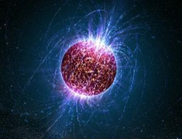

研究显示中子星外壳硬度超钢铁100亿倍(图)http://www.zving.com 2009年04月16日 08:01 
中子星是除黑洞之外密度最大的天体 新浪科技讯 北京时间4月16日消息，据英国《新科学家》杂志网站报道，中子星是宇宙中除黑洞之外密度最大的天体，其每立方厘米的质量高达1亿吨。美国科学家进行的最新模拟研究显示，中子星不仅密度极大，而且其外壳还非常坚硬，其硬度超过钢铁的100亿倍。 中子星又称脉冲星，是宇宙中除黑洞之外密度最大的天体，和黑洞一样，它也是20世纪60年代最重大的天体发现之一。美国印地安那大学伯明顿分校科学家查尔斯-霍洛维茨介绍，对于中子星的研究，目前还有许多未解之谜。其中最重要的一个难题就是关于中子星外壳的硬度。中子星通常被认为是由中子溶液所构成，外表覆盖一层固态外壳。这层外壳又是由富含中子的原子晶体所组成。由于实验室实验目前还无法复制中子星表面的这种极端环境，因此天文学家们此前大多都是假定中子星外壳的硬度与地球上最坚硬的物体相似。但是，霍洛维茨等科学家却通过最新的计算机模拟实验揭示，中子星的外壳比假定的硬度还要硬得多。由于岩石和钢铁晶体通常会有裂缝或缺口，因此它们可能会发生破碎。 但是，中子星上的极端高压让所有可能产生破碎的裂缝消失。在这种条件下，于是就生成了特别纯洁的晶体，因此它们很难破碎。1立方米大小的中子星外壳与同样大小的不锈钢体在受到同样的挤压条件下，在中子星外壳被压变形之前，不锈钢体可能已经破碎了20多次。霍洛维茨解释说，在中子星外壳中，原子相互之间的紧密程度比钢铁原子的紧密程度要高得多，因此，它的抗压破碎点比钢铁要高出100亿倍。宾夕法尼亚州立大学科学家本杰明-欧文认为，这一模拟实验验证了此前人们对中子星外壳硬度的猜疑。“虽然近些年来已经有迹象表明中子星外壳硬度要比想象中高得多，但此模拟实验却是首次完成了完整的计算。”(刘妍) |
Copyright 2008 zving.com. All Rights Reserved